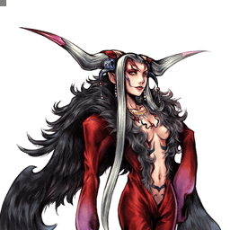

Final Fantasy VIII
Ultimecia
Zoneuse d'élite : projectiles en chaîne et keepaway, mais défense de verre
Vue d'ensemble
Ultimecia est un personnage défensif à vocation aérienne, entièrement tourné vers le zoning et le keepaway de longue et moyenne distance. La plupart de ses coups ont une startup lente, mais ce sont tous de puissants projectiles capables de harceler l'adversaire depuis presque n'importe quel point de l'écran. Leurs dégâts élevés s'accumulent vite, entre projectiles perdus qui touchent et conversions en assist ou en HP.
C'est à mi-distance qu'elle est la plus redoutable : elle y pose ses projectiles et met la pression sur les déplacements adverses autour d'eux. Et si l'adversaire s'approche trop, Knight's Lance et Apocalypse sont les outils parfaits pour le repousser. Elle n'a pas de combos naturels, mais elle se crée de nombreuses occasions d'enchaîner ses coups en séquences très dommageables : hit-confirm sur projectile perdu, Knight's Arrow posée pour combotter, Knight's Axe pour les setups de Chase, ou Charged Lance convertie en Apocalypse — les pierres angulaires de son plan de jeu.
Toute cette puissance en neutral a une contrepartie : la défense d'Ultimecia s'effondre dès qu'elle perd sa position favorable. Un énorme angle mort sous elle, des déplacements médiocres et l'absence de coup rapide pour se dégager rendent chaque mauvaise décision défensive extrêmement exploitable — le tout avec la DEF de base la plus basse du jeu.
Malgré cette défense déficiente, son neutral, ses dégâts et sa maîtrise du zoning la rendent très difficile d'accès pour la majorité du cast, et chaque erreur adverse peut être lourdement punie.
Tier list 2017 (tournoi, dissidia.wiki) : S — 3ᵉ sur 30. Ultimecia est 3e du classement 2017, en tier S. L'overview appuie ce rang : neutral, dégâts et zoning qui verrouillent la partie pour la majorité du cast, malgré une défense fragile.
Forces
- Zoning fantastique : l'une des zoneuses les mieux équipées du jeu, avec de multiples projectiles à poser et enchaîner, de gros outils de dégagement et une zone d'efficacité très large — difficile de trouver un endroit où elle ne peut pas imposer son jeu.
- Charged Knight's Lance : projectile High Priority, capable de stagger les HP attacks et de refléter les projectiles haute priorité (Highest Priority à l'apparition) — un obstacle majeur pour la plupart des personnages, dont l'usage peut tout décider.
- Dégâts élevés : de nombreux projectiles à gros dégâts, et jusqu'à 39 de dégâts de base sur Hell's Judgement — chaque touche majeure fait très mal.
- Jauge assist qui se remplit vite grâce à la rotation constante d'options en neutral.
- Anti-air : l'un des pires endroits où se trouver face à elle est juste au-dessus, grâce à son arsenal de projectiles à grande portée verticale.
Faiblesses
- Défense catastrophique après esquive quand l'adversaire se rapproche : coup le plus rapide en Ranged Low, esquive flottante, saut bas, déplacements lents — un glass cannon dès que l'adversaire trouve le bon angle.
- Un angle mort juste en dessous d'elle, où aucun de ses coups ne peut toucher.
- Restrictions d'assist : ses coups sont peu propices aux combos pour la plupart des assists — Kuja est quasiment le seul à fournir des hit-confirms constants sur ses coups clés et un excellent setup en Hell's Judgement.
- Bravery Boost on Block/Dodge : les builds anti-zoning la forcent à revoir en profondeur son neutral pour ne pas nourrir gratuitement la bravery adverse.
Stats & vitesses
| Nom | Ultimecia (アルティミシア) |
|---|---|
| Jeu d'origine | Final Fantasy VIII |
| ATK de base (LV100) | 111 (High) |
| DEF de base (LV100) | 109 (Lowest) |
| Vitesse de course | 13.5 (Very Slow) |
| Vitesse de dash | 85 (Slow) |
| Vitesse de chute | 115 (Slowest) |
| Chute après esquive | 42 (Slow) |
| BRV la plus rapide | 13F (Knight's Lance) |
| HP la plus rapide | 60F (Apocalypse) |
| HP en 1 coup | Yes (Apocalypse, Shockwave Pulsar) |
| HP links | Yes (Combos only) |
| Command block | Yes (Knight's Lance charged) |
| Armes | Daggers, Rods, Staves,Instruments, Thrown Weapons |
| Armures | Bangles, Hats, Hairpins, Clothing, Robes, Headbands |
| Armes exclusives | Valkyrie, Cardinal, Shooting Star |
| Camp | Chaos |
| Doubleur (JP) | Atsuko Tanaka |
| Doubleur (ENG) | Tasia Valenza |
Valeurs brutes du wiki (page personnage) — plus la valeur est basse, plus le personnage est rapide. Trait pointillé or : moyenne des 31 personnages.
Coups
Startup en frames (60 i/s, données dissidia.wiki). Couleur : Melee Low · Melee Mid · Melee High · Ranged.
Braveries
Liste
All of Ultimecia's bravery attacks have a ground and an aerial version. Attack data is shared between both versions.
Knight's Blade Ranged Low
Non chargée (tapoter cercle) : rafale de flèches rouges, poke rapide à bons dégâts et quasi seule option de sortie de block à mi-distance ; hit stun court (activer l'assist pendant le tir pour assurer la conversion) et priorité basse traversable au dash, compensées par un faible endlag. Chargée (maintenir cercle) : nuée d'épées au tracking étonnamment bon qui attrape les esquives, très gros dégâts, hit stun plus long pour convertir, et priorité Magic Mid qui stagger les blocks et interdit de dasher au travers — idéale pour souffler et tenir la mêlée à distance tout en chargeant la jauge assist. La charge la rend prévisible et l'endlag après annulation expose davantage au punish ; un suivi de l'assist Kuja est possible contre le plafond pour gruger la bravery.
| Normal | Charged | |
|---|---|---|
| Dégâts de base | each (3), max x14 | each (2), max x25 |
| Startup | 43F | 91F |
| Type | Magical | Magical |
| Priorité | Ranged Low | Ranged Mid |
| EX Force | each 3 | each 3 |
| Cancels | Dodge | Dodge |
| CP (maîtrisé) | 30 (15) |
Knight's Axe Ranged Low
| Normal | Charged | |
|---|---|---|
| Dégâts de base | each 10 (up to 30) | 40 |
| Startup | 33F | 53F, 3F (release) |
| Type | Magical | Magical |
| Priorité | Ranged Low | Ranged High |
| EX Force | each 18 | 0 |
| Effets | Chase | Wall Rush |
| Cancels | Dodge | Dodge |
| CP (maîtrisé) | 30 (15) |
Knight's Arrow Ranged Low
| Normal | Charged | |
|---|---|---|
| Dégâts de base | each (7) | each (1), then each (7) |
| Startup | 41F | 57F > 535F |
| Type | Magical | Magical |
| Priorité | Ranged Low | Special > Ranged Low |
| EX Force | 0 | 0 |
| Cancels | Dodge | Dodge |
| CP (maîtrisé) | 30 (15) |
Knight's Lance Ranged Low
La Knight's Lance chargée reste active environ 5 secondes (306F). Version non chargée : trois lances à 13F, le coup le plus rapide d'Ultimecia ; version chargée : Block Highest puis Ranged High avec Wall Rush (données de la table des coups).
| Normal | Charged | |
|---|---|---|
| Dégâts de base | 15 (5 x 3) | 20 |
| Startup | 13F | 33F, 15F (release). 11-19F (Block, after release) |
| Type | Magical | Magical |
| Priorité | Ranged Low | Block Highest, Ranged High |
| EX Force | each 18 | 18 |
| Effets | Chase | Wall Rush |
| Cancels | Dodge, Attack | Dodge |
| CP (maîtrisé) | 30 (15) |
Attaques HP
Liste
All of Ultimecia's HP attacks have a ground and an aerial version. Attack data is shared between both versions.
Great Attractor Melee Mid (charge), Ranged High (release)
Sphère qui grossit pendant la charge et part à très haute vitesse au relâchement — seul HP d'Ultimecia capable de Wall Rush, mais la charge doit être effectuée pour infliger des dégâts (niveau 2 entre 187 et 362 frames, niveau 3 à partir de 363F). Astuces documentées : relâcher entre 183F et 186F sort un niveau 3 anticipé, et relâcher dans les quatre premières frames d'une demi-charge donne une charge complète. Temps de charge extrêmement long et tracking vertical médiocre limitent son emploi : son utilité principale est de charger la jauge assist à peu de frais en dodge cancel de la version non chargée.
| Dégâts de base | each (2) |
|---|---|
| Startup | 183F (LV2) / 363F (LV3), 1F (release) |
| Type | Magical |
| Priorité | Melee Mid (charge), Ranged High (release) |
| EX Force | 0 |
| Effets | Wall Rush |
| CP (maîtrisé) | 30 (15) |
Shockwave Pulsar Ranged High
HP Ranged High avec propriété Absorb : projectiles azur lobés dont la portée augmente en maintenant le bouton (59F, 7F au relâchement). Aucune note d'usage détaillée dans les sources.
| Startup | 59F, 7F (release) |
|---|---|
| Priorité | Ranged High |
| EX Force | 60 |
| Effets | Absorb |
| CP (maîtrisé) | 30 (15) |
Apocalypse Ranged High
Le meilleur HP d'Ultimecia et l'un des meilleurs coups du jeu, à équiper en toutes circonstances. Pression simple : le sigil explose sur place — excellent en défense (explosion longtemps active), en HP rapproché en sortie de block, et pour un suivi d'assist quand Hell's Judgement est hors de portée. Bouton maintenu : le sigil poursuit l'adversaire, rebondit sur les murs dans les espaces exigus et attrape les esquives mal timées, avec une portée verticale énorme qui dépasse l'effet visuel — l'adversaire peut être touché sans même voir le sigil. Quasi impossible à assist punir grâce à son endlag minimal, il verrouille même l'assist adverse au relâchement à bout portant, se dodge cancel en combo vers Knight's Lance ou Knight's Blade non chargées grâce à son long hit stun (au-dessus de l'adversaire ou près du plafond), et son statut de HP à un coup aide à éviter les checkmates d'EX Revenge.
| Startup | 59F, 1F (release) |
|---|---|
| Priorité | Ranged High |
| EX Force | 60 |
| CP (maîtrisé) | 30 (15) |
Hell's Judgement Ranged High
HP Ranged High (103F) : déploie un cercle magique et vole la bravery adverse par pression du bouton — de 3 à 13 touches à 3 de dégâts de base chacune, soit jusqu'à 39 de dégâts de base, l'une des sources de dégâts majeures citées dans les forces du personnage. Aucune note d'usage détaillée au-delà dans les sources.
| Dégâts de base | each (3) (min 3 hits, max 13 hits) |
|---|---|
| Startup | 103F |
| Type | Magical |
| Priorité | Ranged High |
| EX Force | 60 + 3 x N |
| CP (maîtrisé) | 30 (15) |
EX Mode: Junction Griever! & EX Burst
L'EX Mode « Junction Griever! » confère Regen, Critical Boost et Time Crush.
Time Crush (R + carré) : les mouvements de l'adversaire sont complètement gelés pendant une durée fixe — 5,5 secondes (330 frames) une fois qu'Ultimecia a retrouvé sa mobilité — au prix d'un long temps d'incantation ; la recovery est d'environ 34F après le relâchement du bouton.
EX Burst : L'EX Burst Time Compression est une rafale de coups conclue par un impact écrasant (100 de dégâts de base au total) : il faut presser cercle au bon moment, quand le curseur passe dans le cadre.
Mécanique unique
Plan de jeu & techniques avancées
Le plan de jeu d'Ultimecia consiste à ne jamais laisser le combat se jouer aux conditions de l'adversaire : harceler de loin avec ses projectiles, puis basculer à mi-distance — sa zone de prédilection — pour poser ses coups et contraindre les déplacements adverses autour d'eux. Knight's Blade non chargée sert de poke rapide, la version chargée tient la mêlée à distance tout en remplissant la jauge assist, et la rotation constante d'options fait grimper la jauge rapidement.
Sans combos naturels, ses séquences de dégâts se construisent : hit-confirm sur un projectile perdu, Knight's Arrow posée à l'avance pour combotter dedans, Knight's Axe pour les setups de Chase, et Charged Lance convertie en Apocalypse. Apocalypse est la clé de voûte : sur place en défense et en sortie de block, maintenue pour traquer l'adversaire dans les espaces clos, et son long hit stun se convertit en Knight's Lance ou Knight's Blade non chargées près du plafond.
Contre les approches, Charged Knight's Lance est le barrage central : projectile High Priority qui stagger les HP attacks et reflète les projectiles haute priorité à son apparition, actif environ 5 secondes. L'anti-air est un autre point fort : être juste au-dessus d'Ultimecia est l'un des pires placements possibles face à ses projectiles à grande portée verticale.
Le revers de la médaille impose une discipline de positionnement stricte : ne jamais laisser l'adversaire s'installer dans l'angle mort sous elle ni au corps à corps, car sa défense post-esquive est très mauvaise (esquive flottante, déplacements lents, aucun coup rapide de dégagement) et sa DEF de base est la plus faible du jeu. Face aux builds Bravery Boost on Block/Dodge, il faut ajuster le neutral pour ne pas offrir de la bravery gratuite. Côté assist, Kuja est quasiment le seul choix qui convertisse ses coups clés de façon fiable, avec un excellent setup en Hell's Judgement.
Techniques spécifiques
Great Attractor early release
Deux raccourcis de charge documentés : relâcher le bouton entre 183F et 186F de charge sort directement un niveau 3 (bien avant les 363F théoriques), et relâcher dans les quatre premières frames d'une demi-charge la transforme en charge complète.
Great Attractor assist farming
Dodge cancel de la version non chargée de Great Attractor : un moyen peu coûteux de remplir la jauge assist, son utilité principale vu la charge très longue et le tracking vertical médiocre du coup.
Apocalypse dodge cancel combos
Grâce à son long hit stun, Apocalypse se dodge cancel et combotte en Knight's Lance ou Knight's Blade non chargées quand Ultimecia est au-dessus de l'adversaire ou près du plafond ; relâchée à bout portant, elle verrouille aussi l'assist adverse qui tenterait de punir.
Charged Lance reflector
La Knight's Lance chargée est un projectile High Priority (Highest Priority à l'apparition) capable de stagger les HP attacks et de renvoyer les projectiles haute priorité — un roadblock qui peut décider du match à lui seul.
Techniques universelles (blodge, dash feint, lock off, dodge punishment) : voir la page Techniques & glitches.
Matchups
Vidéos de matchs : Replay Theater — matchs de Ultimecia.
Builds
Le build documenté est un hybride « Judgment of Lufenia » avec Equip Glitch (coût CP total supposant le glitch réalisé) : Shooting Star en arme, panoplie Lufenian (Shield, Helm, Armor), assist Kuja, invocation Rubicante et des accessoires boosters (Hyper Ring, Earring, Dismay Shock, Battle Hammer, conditions Summon Unused / Pre-EX Mode / Pre-EX Revenge / Aerial / Opponent Summon Unused, Glutton) pour un multiplicateur maximal de x4,6 — 11626 HP, 916 BRV, 179 ATK, 184 DEF. L'extra ability Master Guardsman est à équiper pour +1000 HP.
| Stats | |
|---|---|
| HP | 11626 |
| CP | 450 |
| BRV | 916 |
| ATK | 179 |
| DEF | 184 |
| LUK | 60 |
| Max Booster | x4.6 |
| Equipment | |
|---|---|
| Assist | Kuja |
| Weapon <img></img> | Shooting Star |
| Hand <img></img> | Lufenian Shield <img></img> |
| Head <img></img> | Lufenian Helm <img></img> |
| Body <img></img> | Lufenian Armor <img></img> |
| Accessory 1 | <img></img> Hyper Ring |
| Accessory 2 | <img></img> Earring |
| Accessory 3 | <img></img> Dismay Shock |
| Accessory 4 | <img></img> Battle Hammer |
| Accessory 5 | <img></img> Summon Unused |
| Accessory 6 | <img></img> Pre-EX Mode |
| Accessory 7 | <img></img> Pre-EX Revenge |
| Accessory 8 | <img></img> Aerial |
| Accessory 9 | <img></img> Opponent Summon Unused |
| Accessory 10 | <img></img> Glutton |
| Summon <img></img> | Rubicante |
| Bravery attacks | |
|---|---|
| Ground | Aerial |
| HP attacks | |
| Ground | Aerial |
| Stats | |
|---|---|
| HP | |
| CP | |
| BRV | |
| ATK | |
| DEF | |
| LUK | |
| Max Booster |
| Equipment | |
|---|---|
| Assist | |
| Weapon <img></img> | |
| Hand <img></img> | |
| Head <img></img> | |
| Body <img></img> | |
| Accessory 1 | |
| Accessory 2 | |
| Accessory 3 | |
| Accessory 4 | |
| Accessory 5 | |
| Accessory 6 | |
| Accessory 7 | |
| Accessory 8 | |
| Accessory 9 | |
| Accessory 10 | |
| Summon <img></img> |
| Bravery attacks | |
|---|---|
| Ground | Aerial |
| HP attacks | |
| Ground | Aerial |
Un second build est prévu dans les données mais entièrement vide, et les sélections d'attaques des builds ne sont pas renseignées dans les tables.
Synergies d'assist
Ultimecia en tant qu'assist
Ultimecia est classée en tier Low de la tier list assist. Ses attaques d'assist : Knight's Axe au sol (BRV, 33F, jusqu'à 30 de dégâts de base, Chase), Knight's Axe en l'air (BRV, 53F, 40 de dégâts, Wall Rush), Hell's Judgement (HP sol, 103F, 39 de dégâts, Chase, apparaît sur le joueur) et Apocalypse (HP air, 59-240F, Chase, apparaît sur le joueur). La section d'évaluation du wiki n'est pas rédigée au-delà de ces données brutes.
Assists recommandées
- Kuja — Seule synergie citée par le wiki, et l'overview précise pourquoi : c'est quasiment le seul assist qui fournisse des hit-confirms constants sur les coups clés d'Ultimecia tout en offrant un excellent setup en Hell's Judgement. C'est aussi l'assist du build documenté.
Tech communautaire
Sources
- https://dissidia.wiki/Ultimecia_(Dissidia_012)
- https://dissidia.wiki/Tier_List_(Dissidia_012)
- https://dissidia.wiki/Tier_List_(Assist)
Limites connues
- Aucun combo n'est documenté (section combos vide, documented: false) : le gameplan repose uniquement sur l'overview et les notes de coups.
- La page matchups est une ébauche (stub) et l'overview ne cite aucun personnage adverse : la section matchups est donc laissée à null.
- La section assist est marquée non documentée : seules la table de données brutes et la mention « Kuja » en synergie existent, sans évaluation rédigée.
- Knight's Axe et Knight's Arrow n'ont aucune note d'usage ; Shockwave Pulsar et Hell's Judgement n'ont que leur description d'une ligne ; les dégâts de Shockwave Pulsar et d'Apocalypse ne sont pas chiffrés (« - »).
- Aucune mécanique unique n'est documentée ; le second build est entièrement vide et les sélections d'attaques des builds manquent ; la table Time Crush est en grande partie vide (dégâts, priorité, type non renseignés).
- Aucune référence externe (section references vide) : communityTech est donc un tableau vide ; les valeurs assistGain sont vides pour tous les coups.